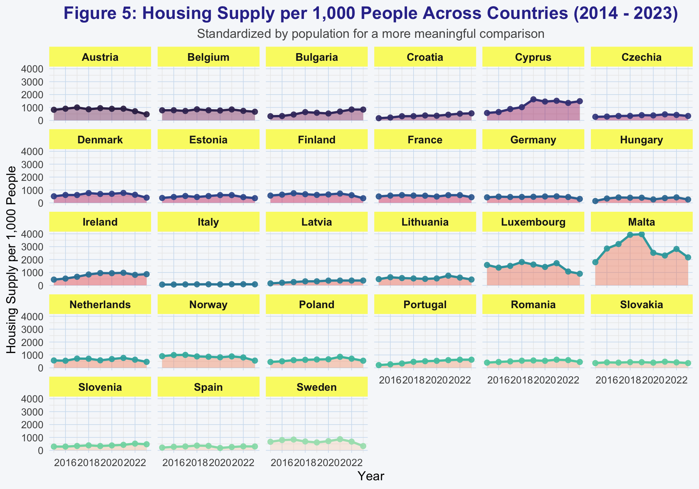
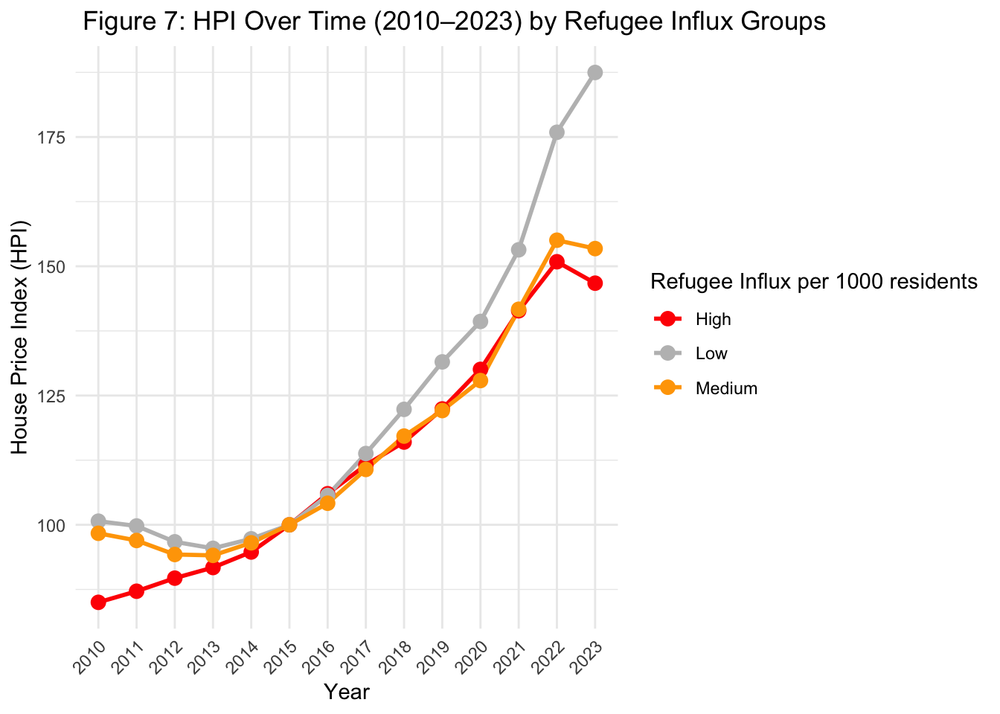
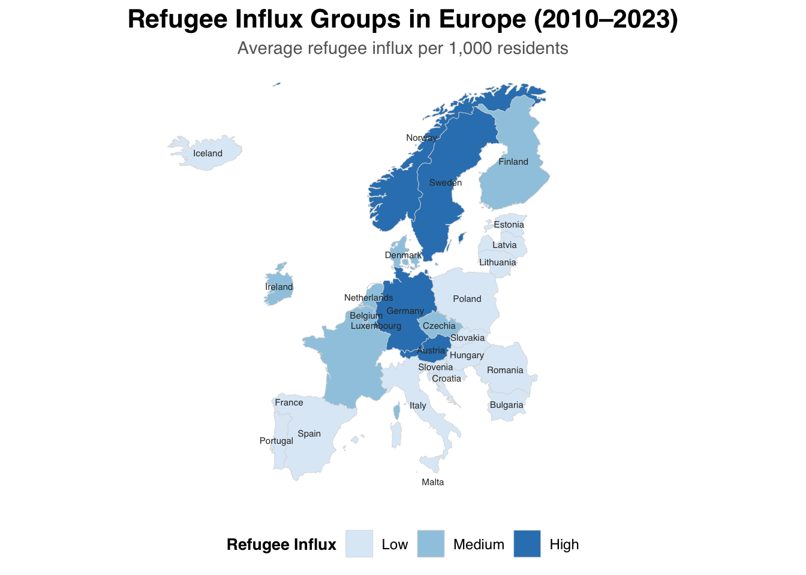
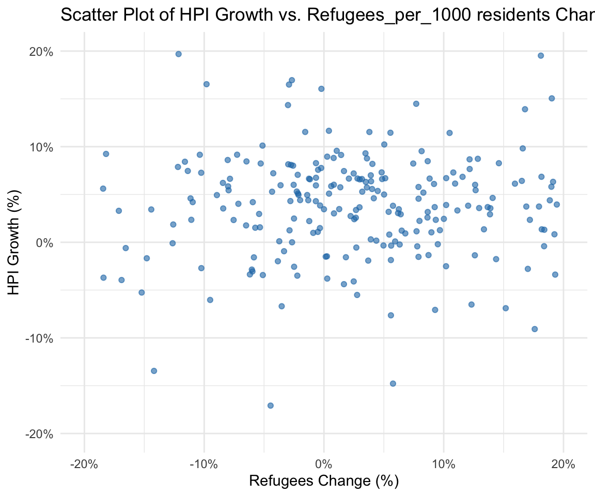

Final Report “The Impact of Refugees on House Prices in European Countries”
Introduction
In recent decades, global conflicts, political instability, and humanitarian crises have led to a significant rise in refugee movements across the world. Prolonged wars in Syria, Afghanistan, and Ukraine; ethnic and religious persecution in countries like Myanmar and Eritrea; and widespread violence & the unlawful occupation in regions such as Palestine have forced millions of individuals to seek safety beyond their national borders. The European Union (EU) presents an interesting case with regards to being an area of protection for individuals who are seeking protection and refuge. EU states recognize asylum as a fundamental human right under the 1951 Geneva Convention (European Commission, Migration & Home Affairs 2021). In order to share responsibility to welcome asylum seekers in a dignified manner, EU member states have established the Common European Asylum System (CEAS) in 1999. However the year 2015 saw a record number of refugees and asylum seekers emigrating to the EU seeking asylum and refuge, which made the EU to consider revamping its migration policies as a whole.
The arrival of refugees in European countries has generated a debate on its economic and social impacts. One key concern is the effect of refugee inflows on housing markets, particularly house prices. While some argue that increased demand from refugees raises house prices, others go on to suggest that concentration in low-income areas may depress local markets. This research aims to examine the relationship between refugee intake and house price dynamics in different European countries. In this context, countries which have restrictive refugee policies can act as a control group while countries which have more open integration policies for refugees will be a treatment group. The policy shock that will be exploring will be increased acceptance of refugees post the year 2015-16 by the European countries.
In view of the above, and in order to explore the relationship between the variable under scrutiny, our research questions will be as follows:
- How does the variation in refugee intake amongst European countries impact house prices?
Policy Background
The onset of civil war in Syria in 2011 and other global crises forced millions of people to flee to neighboring states and Europe. Migrants fled from the conflict struck states such as Syria, Afghanistan, Iraq, and some even closer countries like Albania and Kosovo. As discussed prior, in the year 2015, European countries witnessed an almost unprecedented record influx of refugees - with some estimates quoting 1.3 million individuals arriving in Europe (Pew Research 2016) . In this backdrop the European governments forced through a deal to impose refugee quotas, sharing 120,000 people between them in a watershed decision that several states bitterly opposed.
The relocation would be done according to a mandatory distribution key using objective and quantifiable criteria (40% of the size of the population, 40% of the GDP, 10% of the average number of past asylum applications, 10% of the unemployment rate). It applies to nationalities of applicants with an EU-wide average recognition rate of 75% or higher.
Refugees Landscape
Referring to the graph below, we can observe the asylum applicants across EU countries overtime. At the year 2015 we can see a huge shock in the asylum applications
Differential Country Policies
It was observed that Germany, Hungary and Sweden were the leading destinations for the refugees while the United Kingdom (UK) and France saw fewer applications of asylum seekers and refugees (Pew Research 2016). This makes for a good case of comparison in research analysis which will be discussed in detail further in an ensuing section. While access to the labor market may be restricted by administrative (e.g. work permits, authorizations or visas) and practical barriers (e.g. language, social skills, etc.), refugees have the legal right to work in all OECD countries. For asylum seekers, the rights and obligations differ significantly from one country to another. Most countries, however, grant access to the labour market to some groups of applicants on certain conditions, including a prior waiting period, ranging between 2 months in Italy to 12 months in the United Kingdom.
Data description
The UN Refugee Agency, namely United Nations High Commissioner for Refugees (UNHCR), collates population data relating to persons who are forcibly displaced or stateless. The data is sourced primarily from governments and also from UNHCR operations. Based on UNHCR definitions (included in Appendix), our data set will be focused on the number of refugees and asylum seekers referenced by their host countries. To have a fair comparison across the EU countries, we will use the number of refugees per 1000 residents.
We use data for housing prices from the Eurostat database. The House Price Index (HPI) measures inflation in the residential property market. The HPI captures price changes of all types of dwellings purchased by households (flats, detached houses, terraced houses, etc.). Only transacted dwellings are considered, self-build dwellings are excluded. The land component of the dwelling is included. The HPI is available for all European Union Member States (except Greece), the United Kingdom (only until the third quarter of 2020), Iceland, Norway, Switzerland and Türkiye.
Descriptive Findings
As shown before in the graph, the number of refugees saw substantial increases during the period 2014-16 and 2021-23, and that can be due to:
2014-16
This surge likely corresponds to the heightened migration flows related to global crises and wars in the middle east and other countires.
This year also EU countries decided to open their borders and accept more refugees because of the unprecedented number of refugees.
2021-23
- Probably increased global tensions and Covid-19 pandemic played a role in this but this needs further investigation.
After identifying our period of interest, now we will examine the independent variable, which is Refugees inflows per 1000 residents.
starting with simple summary statistics of the variable from the year 2010 - 2021, the summary statistics are as follows:
| Year | Count | Mean | SD | Min | Q1 | Median | Q3 | Max |
|---|---|---|---|---|---|---|---|---|
| 2010 | 28 | 3.47 | 4.51 | 0.03 | 0.23 | 0.98 | 5.90 | 17.91 |
| 2011 | 28 | 3.51 | 4.78 | 0.03 | 0.22 | 1.08 | 5.24 | 20.17 |
| 2012 | 28 | 3.52 | 5.01 | 0.04 | 0.22 | 0.91 | 5.02 | 21.42 |
| 2013 | 28 | 3.52 | 5.57 | 0.05 | 0.20 | 1.35 | 4.08 | 25.35 |
| 2014 | 28 | 3.69 | 4.89 | 0.10 | 0.27 | 2.26 | 4.81 | 20.52 |
| 2015 | 28 | 5.46 | 7.47 | 0.13 | 0.33 | 3.28 | 6.79 | 33.32 |
| 2016 | 28 | 5.76 | 7.65 | 0.15 | 0.39 | 3.08 | 7.11 | 31.56 |
| 2017 | 28 | 5.82 | 7.48 | 0.16 | 0.41 | 2.83 | 6.53 | 29.09 |
| 2018 | 28 | 6.05 | 7.60 | 0.18 | 0.40 | 2.93 | 6.79 | 28.12 |
| 2019 | 28 | 6.61 | 8.21 | 0.18 | 0.44 | 3.77 | 7.13 | 27.41 |
| 2020 | 28 | 6.81 | 8.34 | 0.17 | 0.39 | 3.85 | 8.51 | 26.48 |
| 2021 | 28 | 7.20 | 8.80 | 0.20 | 0.48 | 4.60 | 8.78 | 31.59 |
| 2022 | 28 | 19.05 | 11.53 | 3.67 | 9.93 | 17.14 | 26.81 | 49.41 |
| 2023 | 28 | 20.60 | 11.38 | 4.65 | 11.71 | 21.18 | 27.02 | 52.57 |
The summary statistics reveal a clear upward trend in the refugee influx across European countries from 2010 to 2023. The mean number of refugees per 1000 residents has steadily increased from 3.47 in 2010 to 20.60 in 2023, with significant fluctuations in standard deviation (SD), reflecting varying levels of influx across countries. The years 2022 and 2023 show a sharp rise in the median values, reaching 17.14 and 21.18, respectively, accompanied by higher Q1, median, and Q3 values, indicating a broader shift towards higher refugee arrivals. Notably, the maximum values for these years (49.41 in 2022 and 52.57 in 2023) suggest a few countries experienced exceptional levels of refugee influx.
Refugees Landscape across the EU Countries
Now we will examine the trends of the refugees influx for EU countries for our period of interest 2014-2016-2023

We can observe that countries like Sweden, Malta, Norway, and Austria admitted the highest number of the refugees per 1000 residents over the years 2014-16.
However, looking the recent data in 2023, Cyprus, Germany, Czechia and Estonia emerge as the leading receptors of refugees. Also, there is some evidence of convergence among number of refugees accepted by countries in the range of 25-35 refugees per 1000 residents.

Looking the faceted plot, we see while some countries have seen gradual increasing trends in refugees per 1000 residents, others have seen sharp rise in the last 3-4 years.
Next, we classified countries into three groups based on their average number of refugees per 1,000 residents over the years 2010–2023. The thresholds were derived from the summary statistics (specifically, the median and 3rd quartile “because the data is right skewed”) of the variable “refugees per 1,000 residents”:
| Country | avg_refugees_per_1000 | refugee_influx_group |
|---|---|---|
| Sweden | 22.90 | High |
| Malta | 21.46 | High |
| Cyprus | 18.61 | High |
| Austria | 17.38 | High |
| Germany | 14.91 | High |
| Norway | 11.82 | High |
| Luxembourg | 9.67 | High |
| Netherlands | 7.26 | Medium |
| Belgium | 7.00 | Medium |
| France | 6.39 | Medium |
| Denmark | 6.08 | Medium |
| Czechia | 5.71 | Medium |
| Finland | 5.58 | Medium |
| Ireland | 5.51 | Medium |
| Bulgaria | 5.47 | Low |
| Iceland | 5.00 | Low |
| Estonia | 4.55 | Low |
| Lithuania | 4.16 | Low |
| Poland | 4.15 | Low |
| Italy | 3.55 | Low |
| Latvia | 3.48 | Low |
| Slovakia | 3.09 | Low |
| Spain | 2.86 | Low |
| Hungary | 1.59 | Low |
| Croatia | 1.12 | Low |
| Portugal | 1.01 | Low |
| Slovenia | 0.98 | Low |
| Romania | 0.89 | Low |
High Refugee Influx: Average above 7.8631702 (above the 3rd quartile, Q3)
Medium Refugee Influx: Average between 5.4905071 and 7.8631702 (between the 1st and 3rd quartiles, Q1 and Q3)
Low Refugee Influx: Average below 5.4905071 (below the 1st quartile, Q1)
This classification method ensures a balanced and data-informed grouping of countries, highlighting those with unusually high or low refugee influxes relative to the sample distribution.
Let’s now turn our focus to the Housing Prices and the Housing Price Index (HPI). THe HPI is used as proxy for the housing prices for the purpose of this report. The following data visualization presents how different countries had their housing supply change over time.

After looking at the housing supply in different EU countries, in this section, we will have a look at what the Housing Price Index (HPI) with the help of a Ridge Plot. This visualizes how the EU HPI is distributed across the years 2014 to 2023 for countries with high refugee inflows. Each ridge represents the distribution of HPI values in a given year, with the height of the curve indicating the density (concentration) of countries around particular HPI values. The color gradient—ranging from dark purple to orange—corresponds to the HPI scale, enhancing visual separation of low and high housing price levels. Most interestingly, this plot helps reveal shifts in housing price trends over time: for example, the ridges shifting rightward (toward higher HPI values), indicates a general increase in housing prices over the decade without the impact or effect of refugee intake by EU countries.

Now we will examine the average House Price Index (HPI) over the years 2010 to 2021 to identify trends across the three refugee influx groups: High, Medium, and Low. This will help visualize how housing markets evolved over time within each group.

Countries with medium and low refugee influx saw faster growth in housing prices after 2016, while those with high refugee influx experienced more moderate growth. This may imply that a higher influx of refugees could be associated with housing market stabilization effects or greater public housing intervention, but further analysis would be needed to isolate causal mechanisms. Additionally, we can observe that the trend before the 2015 shock wasn’t consistent across these groups.
While remaining on the data visualization front of HPI, we can also decipher the country wise trends in those nations which accepted the highest number of refugees from the year 2014 to 2023 in the form of a Faceted line plot, which is as follows:

In this section we will examine the refugees influx spatially across European countries from 2010 to 2023. This spatial analysis will help identify potential spatial patterns, clusters, and trends in refugee movement, facilitating deeper insights into refugee patterns across Europe.

Interestingly, while one might expect that countries in closer geographical proximity would experience similar refugee influxes, the map suggests otherwise. It challenges the assumption that neighboring countries would necessarily share similar refugee patterns, as countries farther apart may exhibit comparable levels of refugee arrivals.

Next, we try to do some exploratory analysis to understand the relationship between growth of HPI and change in refugees per 1000 residents. Scatterplot indicates weak correlation between the two variables.
Empirical Strategy
The empirical analysis which our group intends to employ, seeks to explore the causal relationship between the influx of refugees and asylum seekers in EU countries and subsequent changes in housing prices (proxied by the EU Housing Price Index - HPI). In order to explore the said relationship, we have constructed an entity-year panel dataset (country-year observations), enabling the exploitation of policy variation both over time and across EU member states.
Further, to address the potential endogeneity of refugee inflows and the resulting omitted variable bias, we plan to implement a shift-share instrumental variable approach. Consequently we have constructed an instrument that interacts past refugee settlement shares across EU countries (the “share”) with total EU-wide refugee inflows by country of origin in a given year (the “shift”). This allows us to isolate plausibly exogenous variation in refugee allocation driven by historical settlement patterns rather than contemporary economic or policy conditions on the refugee intake front. This approach will strengthen the identification of the causal impact (if any) of refugee inflows on housing prices.
Regression Approach
The primary specification is a two-way fixed effects model, accounting for country and year fixed effects, structured as follows:
[ _{ct} = _c + t + 1 {ct} + {ct} ]
Where:
- ( _{ct} ): Housing Price Growth in country ( c ) at year ( t )
- ( _c ): Country fixed effects (controls for time-invariant country-specific factors)
- ( _t ): Year fixed effects (controls for time-specific shocks across countries)
- ( _{ct} ): Growth in refugees and asylum seekers
- ( _{ct} ): Error term
Findings
Regression Results
Here we present the results of the two regression models to explore the relationship between refugee growth and housing price index (HPI) growth.
We estimate two models: one with only fixed effects (for country and year) and another including both refugee growth and lagged refugee growth.
| Fixed Effects Only | Full Model | |
|---|---|---|
| + p < 0.1, * p < 0.05, ** p < 0.01, *** p < 0.001 | ||
| (Intercept) | -1339.977*** | -1350.308*** |
| (132.534) | (147.205) | |
| Refugee_Growth | 0.001*** | |
| (0.000) | ||
| Refugee_Growth_Lag1 | -0.001** | |
| (0.000) | ||
| Num.Obs. | 364 | 336 |
| R2 | 0.386 | 0.438 |
| R2 Adj. | 0.335 | 0.383 |
| AIC | 2187.9 | 1979.8 |
| BIC | 2304.8 | 2101.9 |
| Log.Lik. | -1063.958 | -957.890 |
| F | 7.536 | 7.937 |
| RMSE | 4.50 | 4.19 |
The “Full Model” shows that higher current refugee growth is linked to a significant increase in the outcome variable, while refugee growth in the previous year is linked to a significant decrease. The “Full Model,” which includes more factors than just fixed effects, explains the data better than the “Fixed Effects Only” model.
Multicollinearity
Examining the Multicollinearity of our variables with VIF
The GVIF results indicate no serious multicollinearity concerns in the model. Both Refugee_Growth and its lag have GVIF^(1/(2*Df)) values around 1.06–1.07, well below the commonly used thresholds of 2 or 5. The fixed effects for Country and Year also show very low adjusted GVIFs (≈1.00 and 1.05 respectively), suggesting that the inclusion of these categorical variables does not inflate variance significantly. Overall, multicollinearity is not a concern in this specification.
Regression with the addition of another controlling variable
We added another variable, which is the housing supply across the countries, we got the below results:
| Fixed Effects Only | Full Model (df_fin) | Full Model + Housing | |
|---|---|---|---|
| + p < 0.1, * p < 0.05, ** p < 0.01, *** p < 0.001 | |||
| (Intercept) | -1339.977*** | -1350.308*** | -1097.375*** |
| (132.534) | (147.205) | (326.683) | |
| Refugees_per_1000_Growth | 0.066*** | 0.046*** | |
| (0.019) | (0.012) | ||
| Refugees_per_1000_Growth_Lag1 | -0.065** | -0.023+ | |
| (0.020) | (0.012) | ||
| Housing_per_1000_Growth | 10.172*** | ||
| (1.730) | |||
| Housing_per_1000_Growth_lag1 | 5.401*** | ||
| (1.568) | |||
| Num.Obs. | 364 | 336 | 189 |
| R2 | 0.386 | 0.438 | 0.581 |
| R2 Adj. | 0.335 | 0.383 | 0.498 |
| AIC | 2187.9 | 1979.8 | 1047.3 |
| BIC | 2304.8 | 2101.9 | 1154.3 |
| Log.Lik. | -1063.958 | -957.890 | -490.657 |
| F | 7.536 | 7.937 | 7.028 |
| RMSE | 4.50 | 4.19 | 3.25 |
The results suggest that refugee inflows have a significant impact on housing price growth in the EU, with both current and past refugee growth influencing housing dynamics. Specifically, current refugee inflows lead to higher housing price growth, as seen in both the Full Model and the Full Model + Housing, where a positive relationship is established. This likely reflects the demand for housing that arises when refugee populations increase, either through direct housing needs or indirectly due to the economic integration of refugees in the host country. On the other hand, lagged refugee inflows show a negative effect on housing growth, suggesting that initial boosts in housing demand may be followed by a lagged response, possibly due to market adjustments, overbuilding in earlier periods, or delayed policy interventions.
The inclusion of housing supply growth control suggests positive effect of refugees dominate, however, the positive coefficient on housing supply is contrary to expectations.
This suggests possible endogeneity concerns in the data that we have been working with. Therefore, we have come forth with the Shift Share approach which can be viewed in the next section.
Conclusion
This report set out to investigate the impact of refugee inflows on housing prices across European countries, leveraging the policy shock of increased refugee acceptance post-2015/16. The study used a panel dataset of country-year observations and employed a shift-share instrumental variable approach to address potential endogeneity concerns. Initial empirical models suggested a nuanced relationship, with current refugee growth appearing to exert upward pressure on housing prices, while lagged refugee growth indicated a potential dampening effect. However, these preliminary findings were subject to concerns about endogeneity, which motivated the application of the shift-share instrumental variable approach.
The implementation of the Bartik-style instrument, utilizing historical refugee settlement patterns to isolate exogenous variation in refugee allocation, yielded a critical shift in our understanding. The strength and validity of the instrument were confirmed through robust first-stage regression results, effectively addressing the endogeneity issue.
Crucially, the second-stage analysis revealed that, once endogeneity is accounted for, refugee inflows do not demonstrate a statistically significant impact on housing prices at the aggregate country level. This finding implies that the observed correlations in initial models were likely confounded by other factors, and that exogenous variations in refugee inflows, driven by broader geopolitical events and historical settlement patterns, do not exert a measurable influence on housing market dynamics within the studied European context.
These results contribute to the ongoing debate on the socio-economic consequences of refugee migration, suggesting that concerns about inflationary pressures on housing markets due to refugee influx may be overstated at the macroeconomic level. It is important to acknowledge the limitations of this study, primarily its focus on aggregate country-level effects. Future research could explore more granular regional or local impacts, or investigate the role of specific housing policies and market structures in mediating the relationship between refugee inflows and housing prices. Further research can also examine the long term effects.